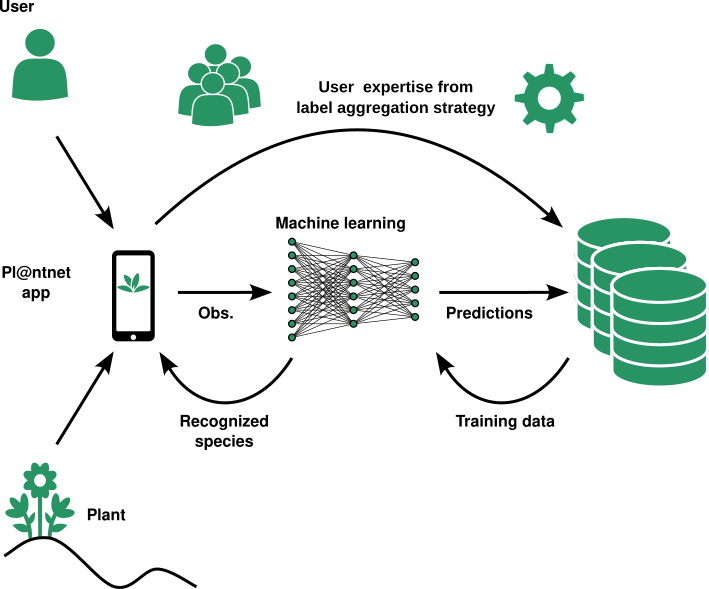
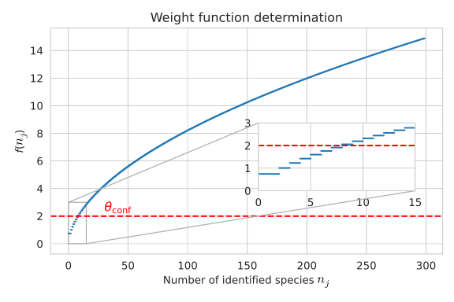
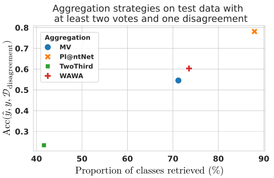

Crowdsourcing and citizen science
How to handle our data?
2024-07-05
Quick word about myself
- Master in Biostatistics (Univ. Montpellier)
- Thesis on label ambiguity in crowdsourcing setting
- Today’s goal: explore the world of crowdsourced datasets
Supervisors and more

Crowdsourcing: where is my data coming from?
Training a classifier

Training a classifier

Crowd labels
\(\Longrightarrow\) We write \(y_i^{(j)}\) the answer from worker \(w_j\) to task \(x_i\) \(\Longleftarrow\)
Pipeline available in the peerannot library
Identify ambiguous tasks
Entropy
\[\begin{align*} H(p)&=-\sum_{k}p_k\log(p_k) \quad\text{with}\quad p = \frac{1}{|\mathcal{A}(x_i)|}\left(\sum_{j\in \mathcal{A}(x_i)} \mathbf{1}(y_i^{(j)}=k)\right)_{k\in[K]} \end{align*}\]
Pros
- Easy to compute
- Lots of theory
Cons
- Only representative for a large number of labels
- Null entropy = Single label or Consensus
Weighted Areas Under the Margin (Lefort et al. 2024)
- Adapted from the \(\color{blue}{\text{Area Under the Margin (Pleiss et al. 2021)}}\) in the supervised setting
- Detect images “hard to learn” for a given NN classifier during \(T\) training epochs
\[ \mathrm{WAUM}(x_i) = \frac{1}{\displaystyle\sum_{j'\in\mathcal{A}(x_i)} s^{(j')}(x_i)} \sum_{j\in\mathcal{A}(x_i)} s^{(j)}(x_i) \color{blue}{\left\{\frac{1}{T} \sum_{t=1}^T \sigma(\mathcal{C}(x_i))_{y_i^{(j)}} - \sigma(\mathcal{C}(x_i))_{[2]}\right\}} \]
- Each worker has a weight \(s^{(j)}(x_i)>0\) (Servajean et al. 2017)
- The higher the WAUM the easier the task was to classify
Weighted Areas Under the Margin
Pros
- Works with few labels
- Considers the tasks’ difficulty using the tasks
Cons
- Sensitive to architecture
- Can be computationally expensive
Examples of identified images using the WAUM
CIFAR-10H: K=10

plane, car, bird, cat, deer, dog, frog, horse, ship, truck
LabelMe: K=8
highway, insidecity, tallbuilding, street, forest, coast, mountain, open country.
Aggregate labels
(Weighted) Majority Votes
\[ \hat y_i = \underset{k\in[K]}{\mathrm{argmax}}\left(\sum_{j\in\mathcal{A}(x_i)} s^{(j)}\mathbf{1}(y_i^{(j)}=k)\right)_k \]
- Majority Vote
- \(s^{(j)}=1\) for all workers
- Sensitive to poorly performing workers
- Lots of theory for performance under different settings
- Worker Agreement with Aggregate (Appen, 2021)
- \(s^{(j)}=\mathrm{Accuracy}(\{y_i^{(j)}\}_i, \hat y_i^{\mathrm{MV}})\rightarrow\) WAWA
- Easy to compute and less sensitive than MV
- Weighted majority vote using Shapley values in crowdsourcing Lefort et al. 2024 (CAp)
- Use Shapley values as weights for the interpretability:
\[ s^{(j)} = \sum_i \left|\sum_{S\subset [n_\texttt{worker}]} \frac{|S|! (n_\texttt{worker}-|S|-1)!}{n_\texttt{worker}!}[\nu_{x_i, f}(S\cup \{j\}) - \nu_{x_i, f}(S)]\right| \]
- Iterative Weighted Majority Vote (Li, 2014)
- Iteratively apply WAWA until convergence
- Zero Based Skill (crowdkit)
- Gradient descent version of WAWA
At each step \(t\): \[ s^{(j)}_t \gets s^{(j)}_{t-1} - \eta \left(s^{(j)}_{t-1} - \mathrm{Accuracy}(\{y_i^{(j)}\}_i), \hat y_i^{t-1}\right) \]
Dawid and Skene
- Workers are defined by their pairwise confusions.
- This answer follows a multinomial distribution.
\[ y^{(j)}|y^\star\sim\mathcal{M}\text{ultinomial}(\pi^{(j)}_{y^\star,\cdot}) \]
where \(\pi^{(j)}_{k,\ell}=\mathbb{P}(\text{worker } j \text{ answers } \ell \text{ with truth } k)\)
Pros
- Worker uncertainty is modeled
- Can use adversarial workers
Cons
- Memory issue: \(n_\texttt{worker} \times K^2\) parameters for confusion matrices only
Dawid and Skene (obtain the labels)
- Probabilistic model \(\rightarrow\) likelihood maximization \[ \prod_{i\in [n_{\text{task}}]}\prod_{k \in [K]}\left[\rho_k\prod_{k\in [n_{\text{worker}}]} \prod_{\ell\in [K]}(\pi^{(j)}_{k, \ell})^{\mathbf{1}_{\{y_i^{(j)}=\ell\}}} \right]^{T_{i,k}} \]
- Prevalence: \(\rho_k=\mathbb{P}(y_i^\star=k)\)
- Labels: \(T_{i,k}=\mathbf{1}(y_i^\star=k)\)
Results on LabelMe dataset (Rodrigues et al., 2018)
- \(K=8\) for \(1000\) images and \(59\) workers
- Each image: \(|\mathcal{A}(x_i)|\leq 3\) \(\Rightarrow\) Entropy not useful
- Prune images with \(\mathrm{WAUM}<q_{0.01}\) (quantile of WAUM)
Application to Pl@ntNet
Pl@ntNet system (in short)
Pl@ntet aggregation

Pl@ntNet weights
\[ f(n_j)=n_j^\alpha - n_j^\beta + \gamma, \text{ with }\begin{cases} \alpha=0.5 \\ \beta=0.2 \\ \gamma=\log(2.1)\simeq 0.74 \end{cases} \]
Dataset specifications
- South Western European Flora since 2017
- 823 000 users and \(K>11 000\)
- \(>6.5\)M tasks
- \(>9\)M votes casted
High imbalance: \(80\%\) of images are represented by \(10\%\) of votes
How to evaluate the performance
- No ground truth \(\rightarrow\) make one!
- Extraction of \(98\) botanical experts (TelaBotanica + commmunity)
Scaling aggregation strategies
- Majority Vote
- WAWA: Majority Vote with worker weight=accuracy against MV
- TwoThird: One of the tools of iNaturalist. Accept label if:
- more than two votes
- 2/3 consensus
Results

Take home message
- Crowdsourcing allows to collect data easily
- … but using this data efficiently requires expertise
- Improve input quality \(\Rightarrow\) Improve output predictions
- Peerannot library for classification crowdsourced datasets